Large wind-loaded structures are commonly optimized by increasing section size or material thickness. This project instead investigates geometry itself as the primary design variable, deriving analytical relationships between taper, projected wind area, bending moments and stress within elliptical hollow sections. The resulting framework establishes a foundation for computational optimization and future finite element validation.
The work develops a closed-form analytical framework for tapered elliptical tubular structures subjected to orthogonal wind loading. Rather than treating geometry as fixed, the major axis, minor axis and taper become continuous design variables that influence projected area, bending moments, section properties and allowable stresses.
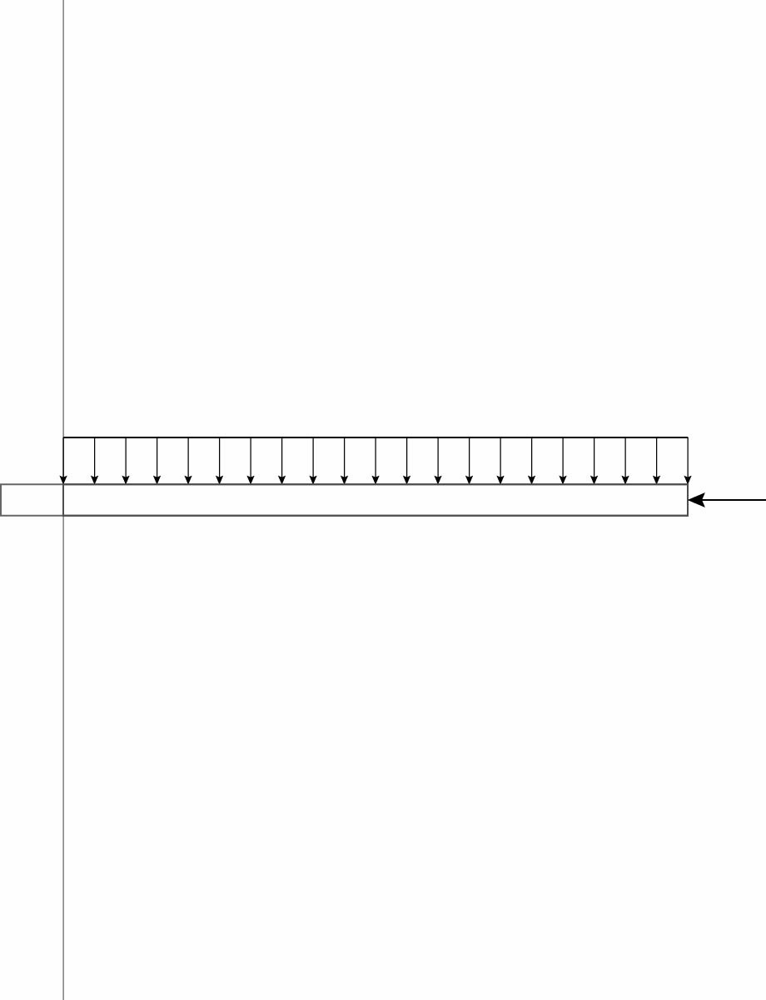
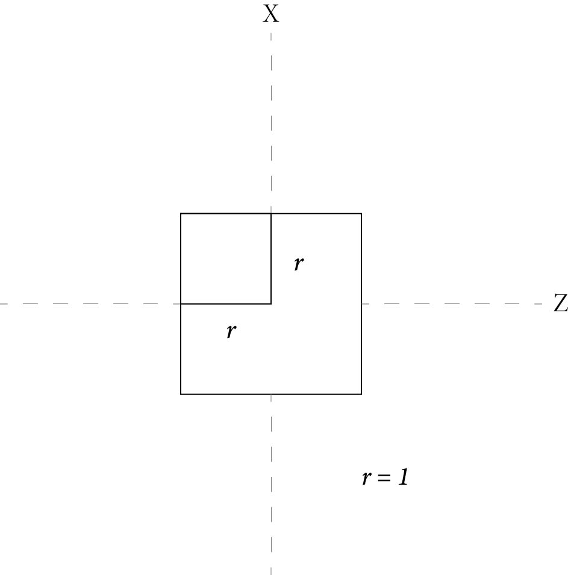
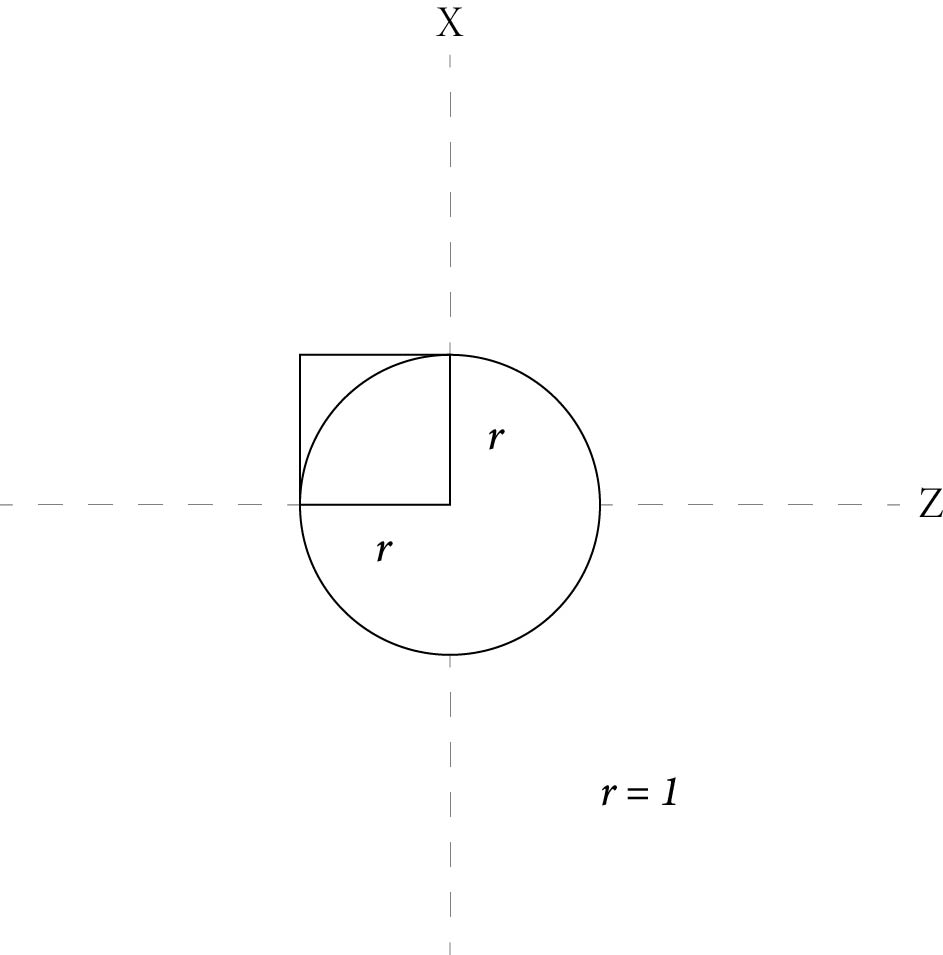
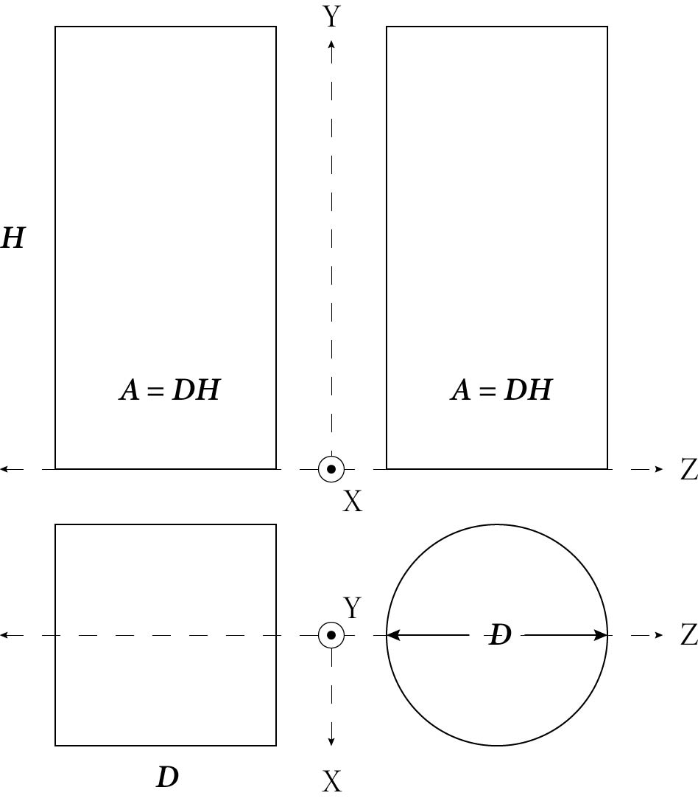
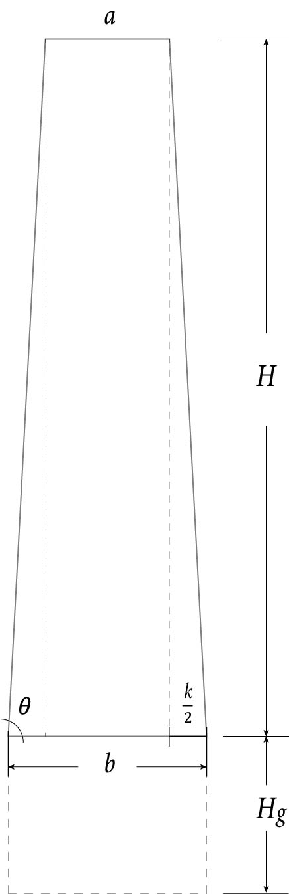
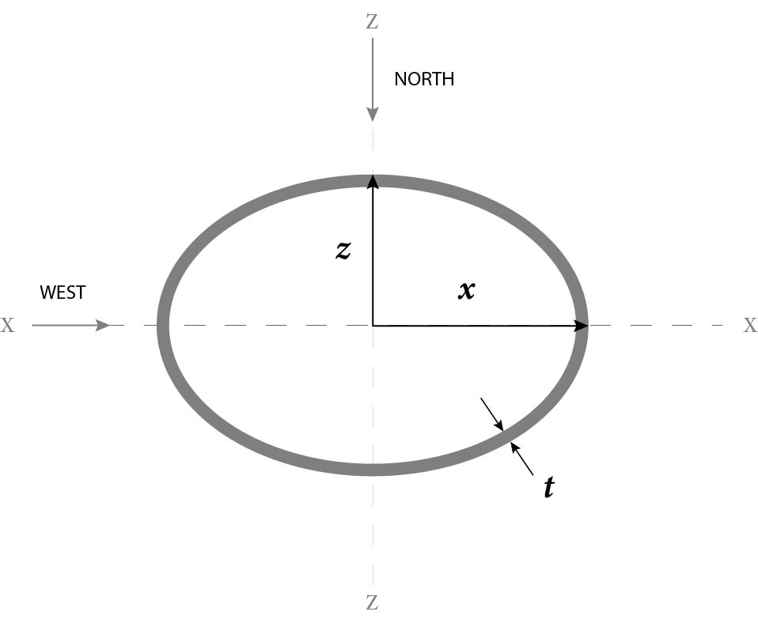
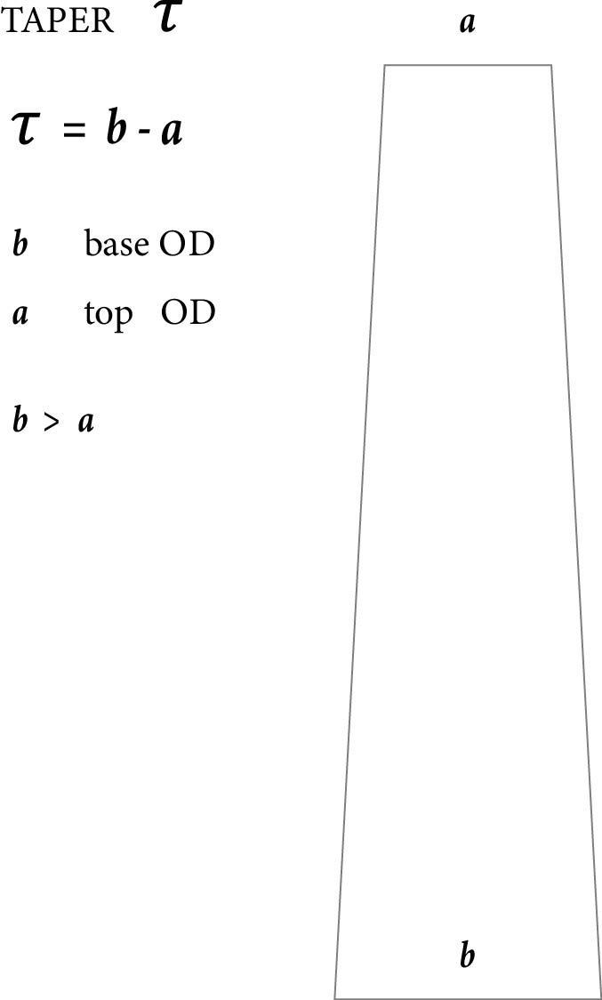
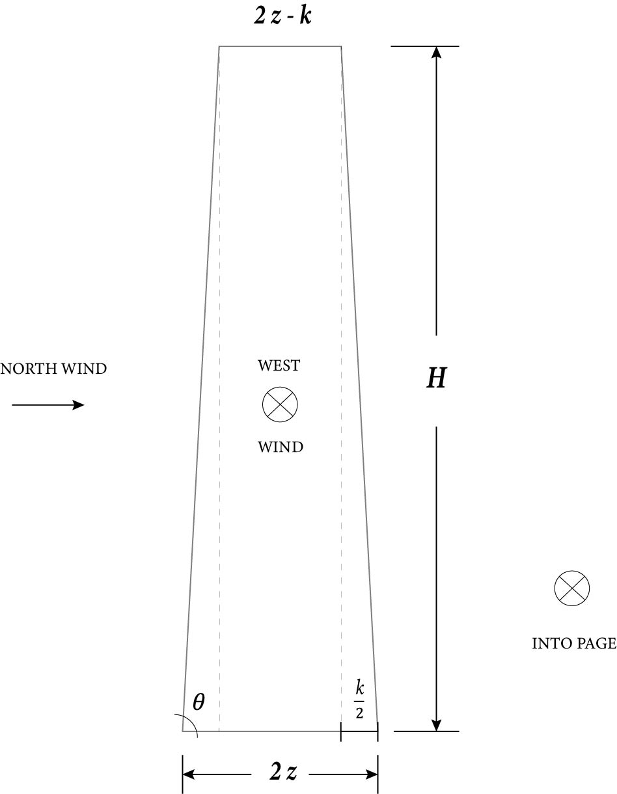
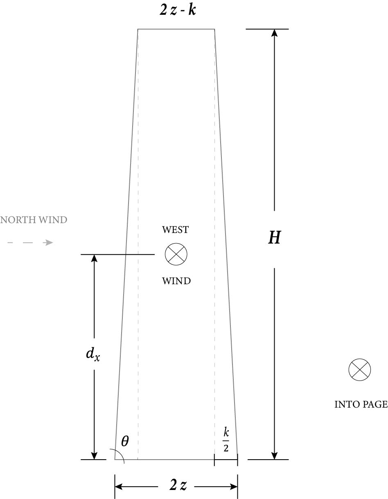
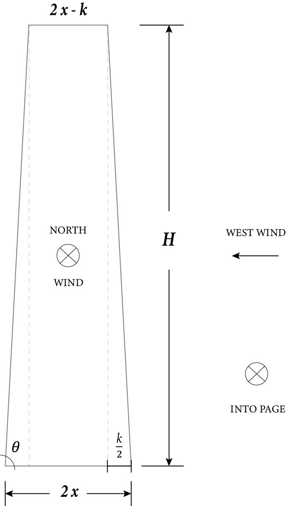
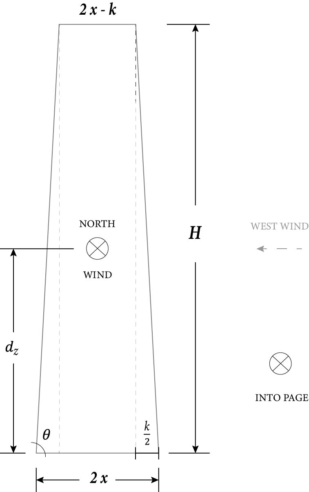
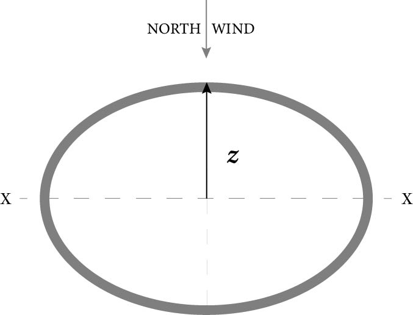
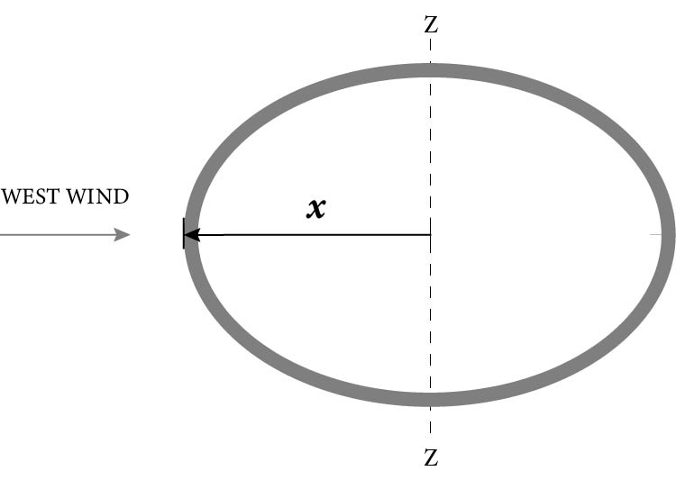
This analytical methodology demonstrates how geometry can be used as an active optimization variable rather than a fixed input. The framework provides a basis for integrating closed-form mechanics with numerical optimization and finite element simulation, enabling efficient structural design while maintaining manufacturable geometry.